Home
Benchmark run: feature/float-specific-dist1
66d0d316dcee331704f56cd58b1fb2e5d904c004 · 2026-07-20T07:28:17Z
Branch comparison run
Compared against baseline run 20260719T221519Z-b1140f5d2c86.
https://sdd-org.github.io/kiddo/branches/feature-float-specific-dist1/history/20260720T072817Z-66d0d316dcee/index.html
bench_result-v6-nearest_n-eytzinger-f32-nearest_n_k20-float-specific-dist1.png
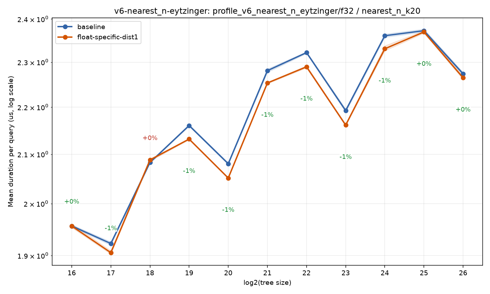
bench_result-v6-nearest_n-eytzinger-f32-nearest_n_k5-float-specific-dist1.png
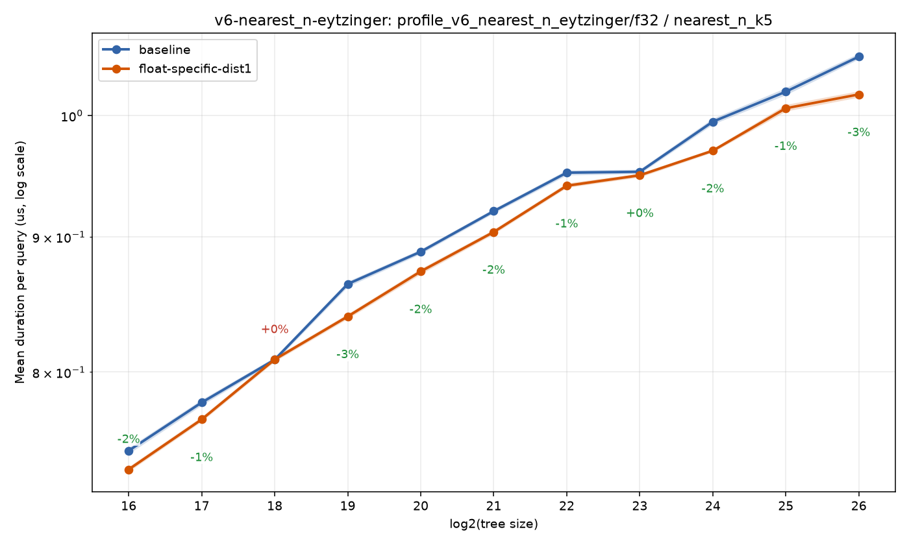
bench_result-v6-nearest_n-eytzinger-f32-nearest_n_k50-float-specific-dist1.png
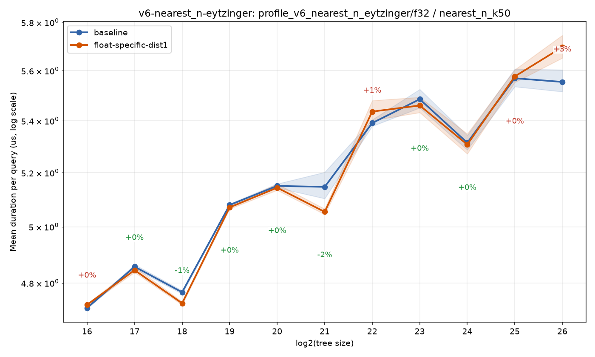
bench_result-v6-nearest_n-eytzinger-f64-nearest_n_k20-float-specific-dist1.png
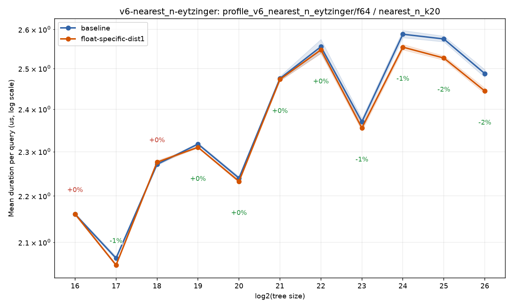
bench_result-v6-nearest_n-eytzinger-f64-nearest_n_k5-float-specific-dist1.png
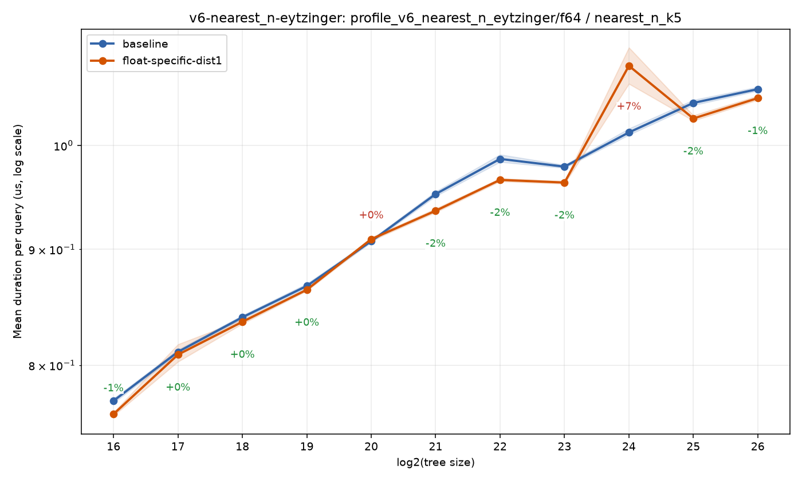
bench_result-v6-nearest_n-eytzinger-f64-nearest_n_k50-float-specific-dist1.png
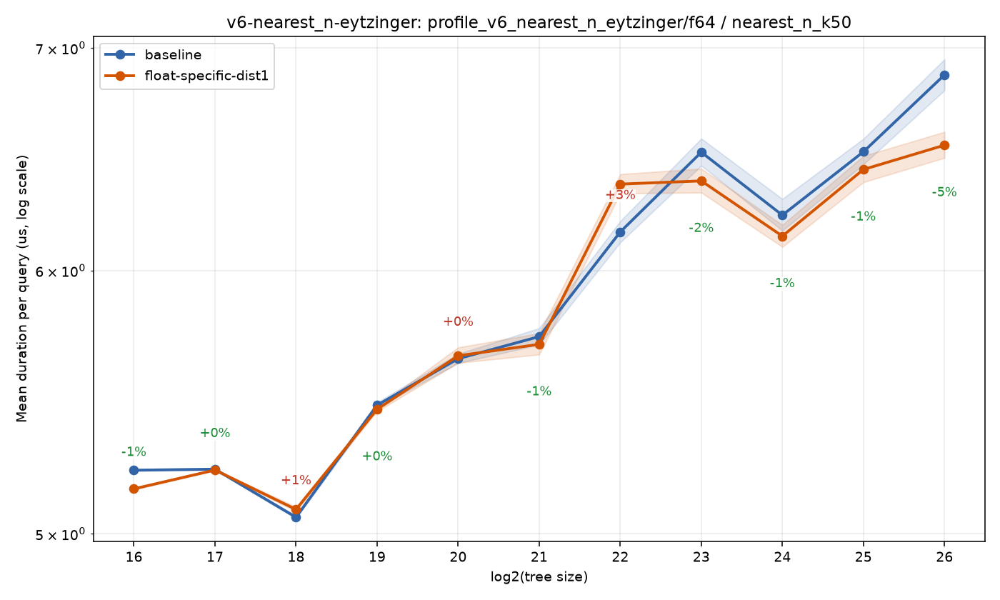
bench_result-v6-nearest_one-eytzinger-f32-nearest_one-float-specific-dist1.png
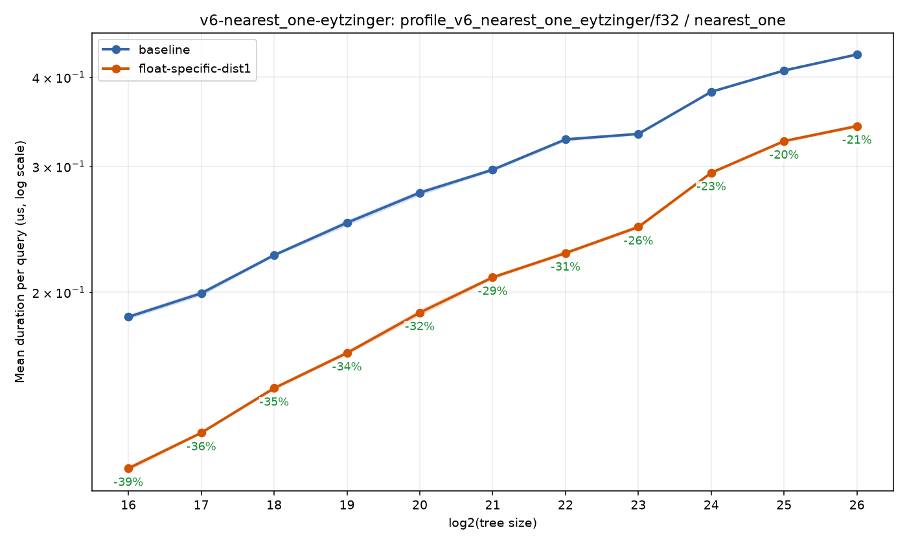
bench_result-v6-nearest_one-eytzinger-f64-nearest_one-float-specific-dist1.png
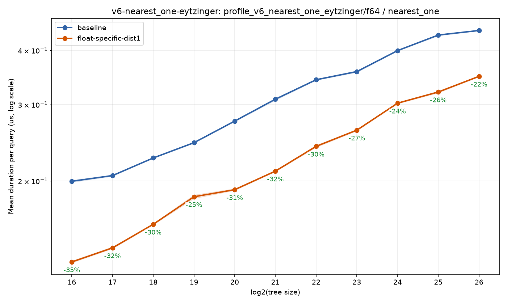
bench_result-v6-dist-metrics-metric-squared_euclidean-float-specific-dist1.png
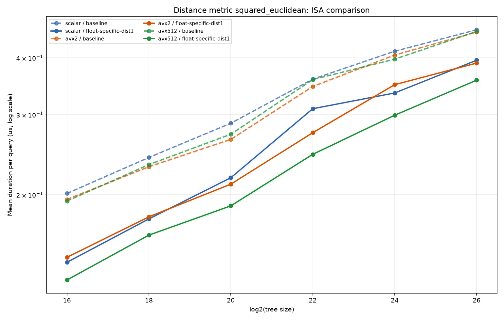
bench_result-v6-dist-metrics-metric-manhattan-float-specific-dist1.png
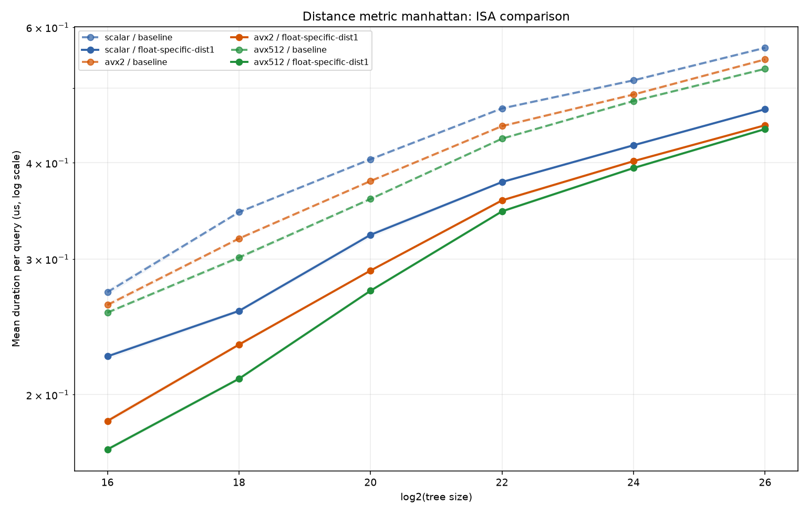
bench_result-v6-dist-metrics-metric-chebyshev-float-specific-dist1.png
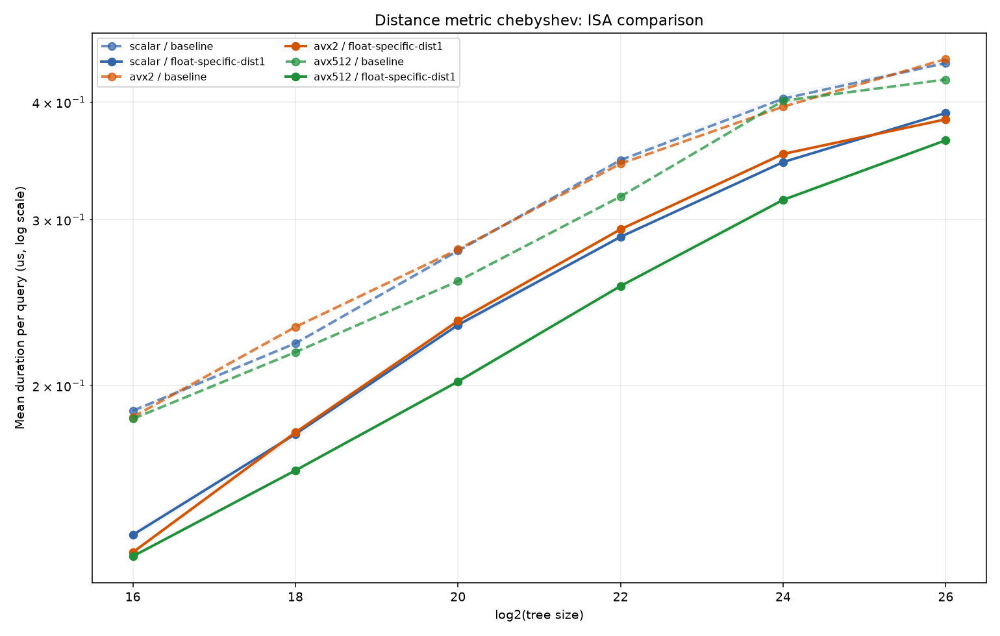
bench_result-v6-dist-metrics-metric-minkowski_p3-float-specific-dist1.png
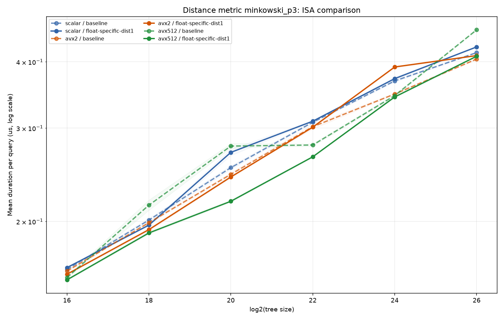
bench_result-v6-dist-metrics-isa-scalar-float-specific-dist1.png
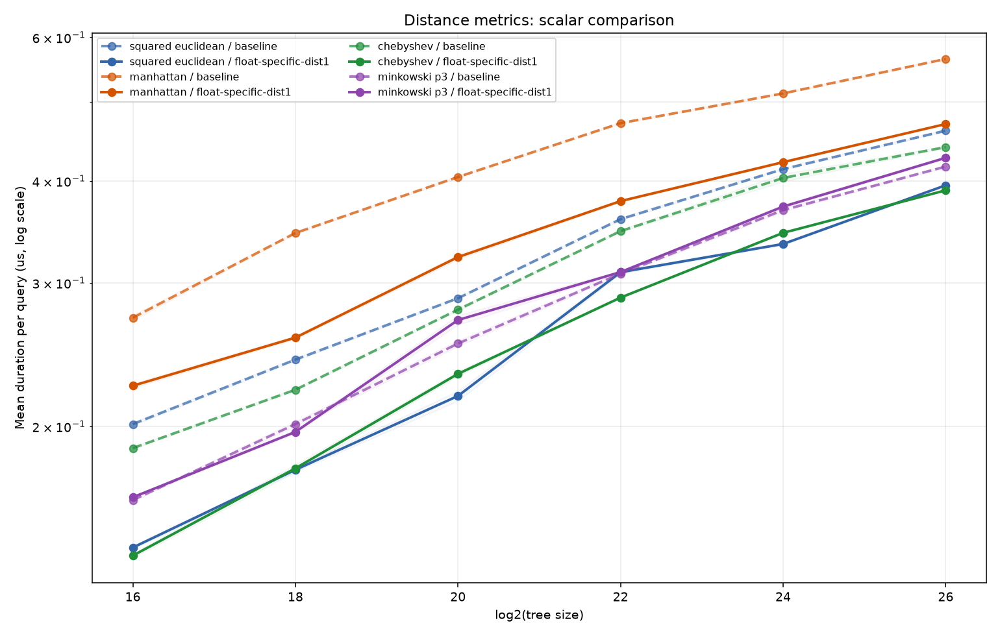
bench_result-v6-dist-metrics-isa-avx2-float-specific-dist1.png
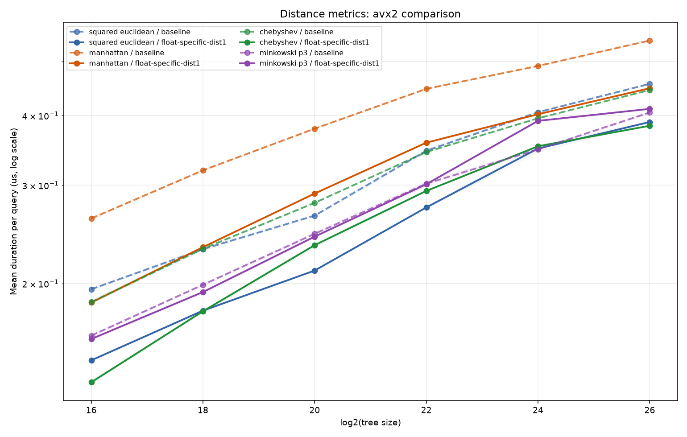
bench_result-v6-dist-metrics-isa-avx512-float-specific-dist1.png
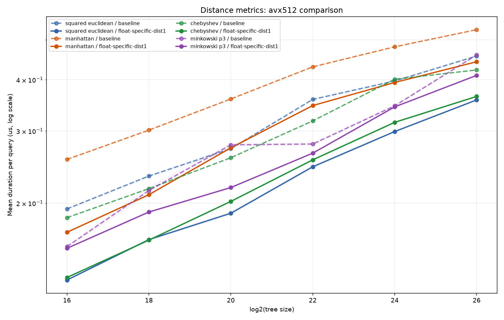